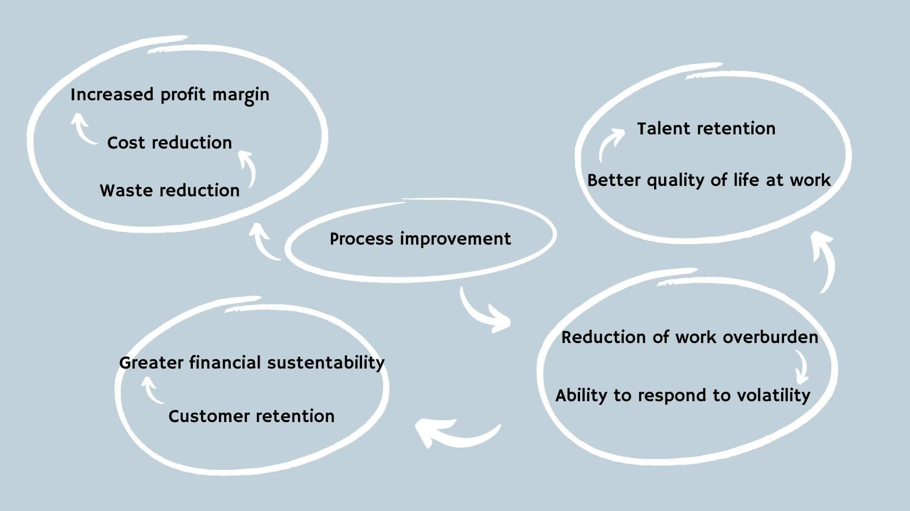

About us
We have over 15 years of experience working in different areas, such as software development, logistics, healthcare, data science, construction, sanitation, events, finance, retail and research - which has given us a large portfolio of knowledge and tools, and the ability to use them in other domains.
We have expertise in several methodologies, both agile and traditional, such as Kanban, Scrum, Extreme Programming, Scaled Agile Framework (SAFe), Lean, Toyota Production System (TPS), Scrum@Scale, Theory of Constrains, Kanban Maturity Model, Kaizen, Cinefyn, PDCA, Design Thinking, ORKs, Fit for Purpose (F4P), Management 3.0, among many others.
Agile
Agile methodologies emerged as a response to the traditional management model, known as Waterfall, where the product is planned and developed in its entirety, and is only delivered when all its parts are ready. In the mid-1930s, the idea of iterative and incremental development (IID) emerged, which consists of starting with a fundamental product and, with each iteration, increasing it with improvements and new features, delivering value earlier and enabling learning from it, until reaching the final product.
Over time, this idea developed into structures that we now call agile methodologies. However, these fell into exactly what they were initially trying to change: preconceived and rigid models, implemented as if they were sacred, where adjustments to their rules end up not being welcome, generating an excessive focus on applying them in their entirety instead of delivering value to the customer. What's more, the world is not static and each company is a different universe. Therefore, each organization needs a customized solution for its challenges, segments and objectives.
Our approach
We work with an evolutionary approach, avoiding restructuring and disruptive changes (which generate more stress and confusion than results). We are inspired by three principles that have proven to be the driving force behind the progress of complex systems, which gave rise to the 7 pillars of our methodology. These principles are:
Natural evolution
The most antifragile system - that is, one that takes advantage of setbacks to evolve - that we know of is our world. It has existed for billions of years; living beings have existed for millions. And, despite all the cataclysms suffered, life on our planet has not only survived but evolved. In biology, the concept of evolution means “adaptation to the environment”, and this is what we seek to bring to companies.
A multitude of species emerged, and the environment selected those that were best suited to survive and prosper, just as the market rewards companies, products and services that are more aligned with its expectations.
Agility as an ability
The concept of agility is deeply embedded in the world of sports, and means the ability to react to the context, adapt and respond quickly. What makes an athlete agile? Being lean, having a good body structure, expertise and good situational analysis skills. The same goes for organizations: service flows without waste, with good processes, where the rules are clear and there is a good perception of risks, will be more successful in dealing with volatility.
Iterative and incremental development (IID) of organizations
As previously mentioned, the concept of IID emerged around 1930 and seeks to develop products from a primary item and evolve it through constant feedback - just as, when we are traveling, we frequently check the road signs and the map to keep us on the right path - and adding and/or correcting features. This early feedback helps to detect improvements early on, learn from mistakes and adapt.
Agile frameworks try to do this through sprints (short development cycles), but they end up with a rigid process that is not very responsive to change.
Our approach brings the concept of DII to both deliverables and company evolution, making continuous improvement a cultural aspect where everyone is responsible, through small (incremental) adjustments using inspection cadences (iterativity).
